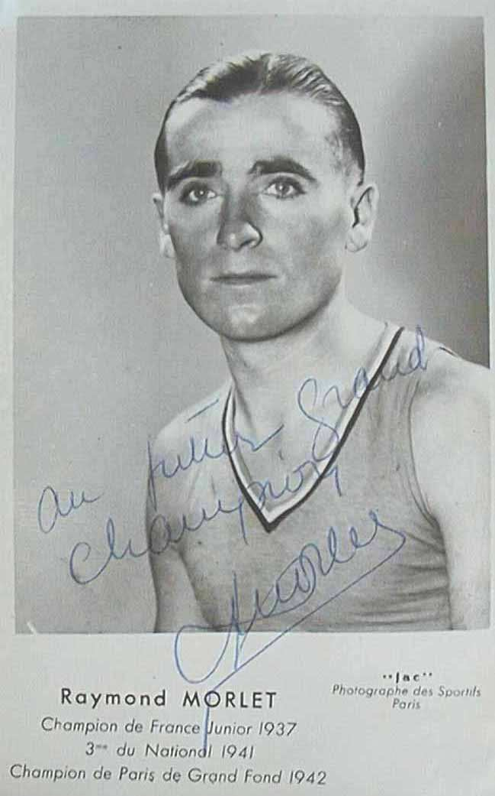
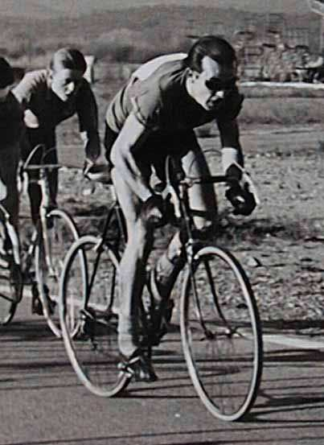
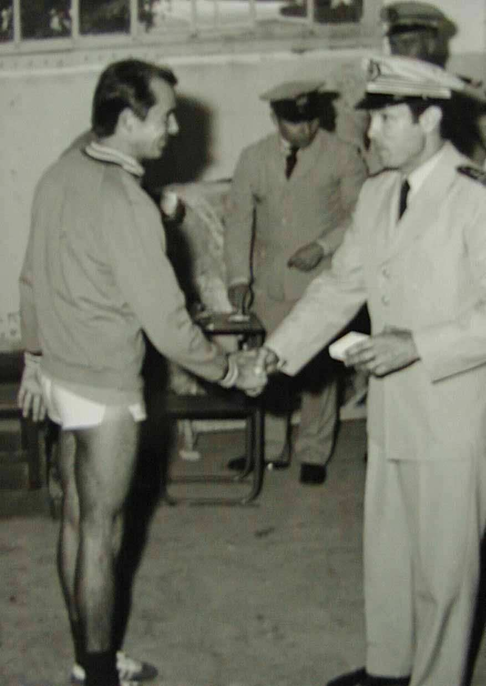
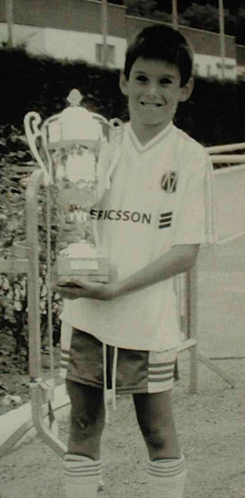
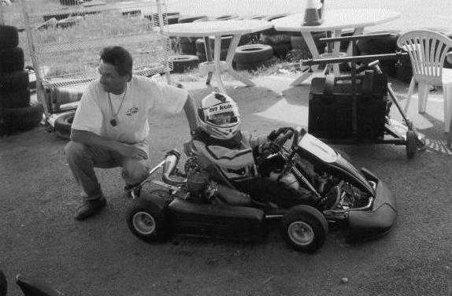
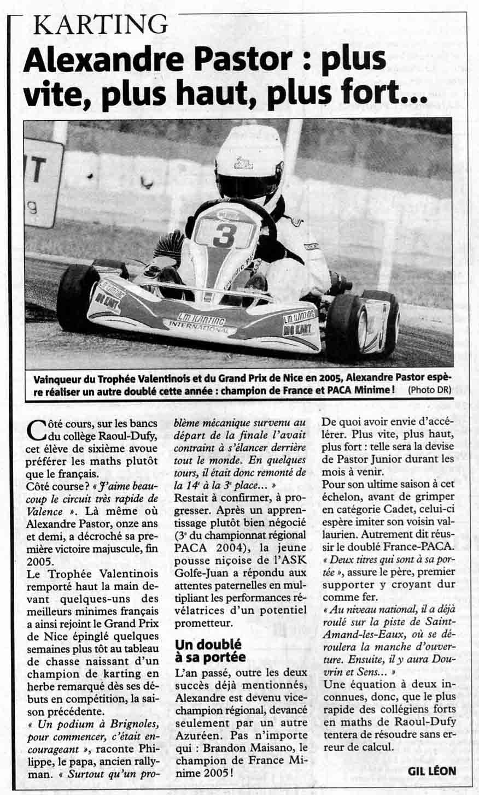
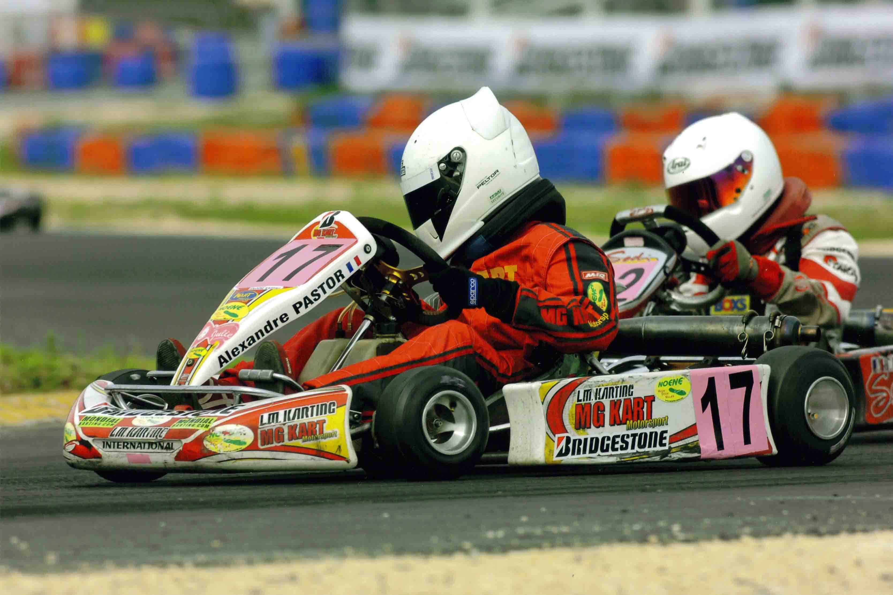
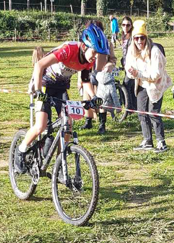
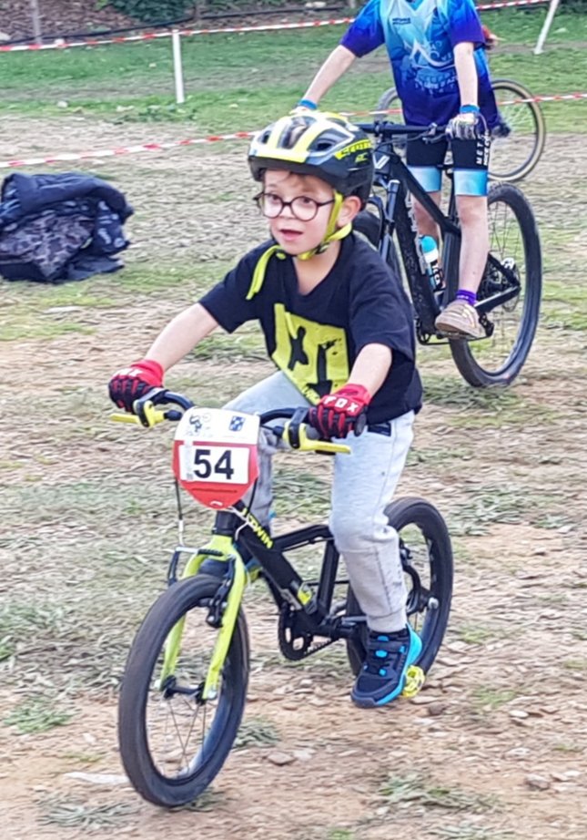
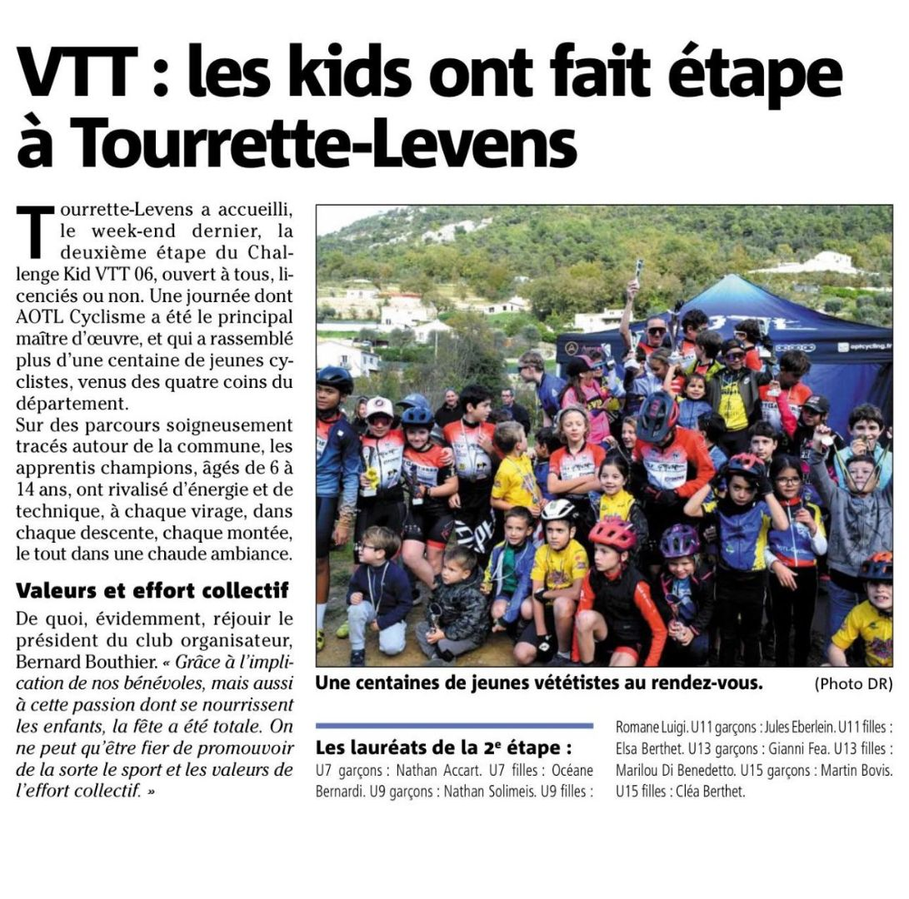

Ma
devise, comme celle de la ville de MORLAIX, en Bretagne : "S'ils
te mordent, mords-les !"
Ma
devise, comme celle de la ville de MORLAIX, en Bretagne : "S'ils
te mordent, mords-les !"
Si vous êtes de ceux qui ont connu mon Père, ou bien si vous êtes comme moi
: fils ou bien fille,
petit-fils
ou petite-fille etc. d'un champion ayant couru ces années là, et aussi plus
récemment, les noms de :
Roger REROLLE
AMROUCHE
HAMZA
EL MABROUK
Alain MIMOUN
Gaston TINARD
Joseph GUIOMAR
Charles CÉROU
Roger ROCHARD
André LONLAS
HONOREZ
Raphaël PUJAZON
ARNOLD
LEHEURTEUR
Jean THIERY
POHAREC
VÉRITÉ
Michel JAZY
LE TISSERAND
Roger CUZOL
MENU
vous sont
peut-être familiers. Ce sont des athlètes qu'a connu mon Père ... alors n'hésitez
pas à me contacter,
mon père
aurait été heureux de se rappeler ce temps-là et nous pourrons peut-être évoquer
ensemble des
moments dont
nous sommes sûrement fiers !
En attendant d'autres photos et articles de journaux voici deux photos de mon père


Le
fils Daniel (moi) n'a pas fait une carrière sportive aussi brillante
...


Les
petits-enfants :
-
en Foot avec Florian BELLON (13ans sur la photo) ...

-
en Karting avec Alexandre PASTOR (8ans sur la photo)
... ici avec papa comme coach et mécanicien !

Ci-dessous un article de NICE MATIN datant du samedi 18 Février 2006

Après
sa place de 3ème au championnat régional PACA en 2004,
ALEXANDRE
devient vice-champion en 2005 et termine 1er en 2006 !

Et
peut-être bientôt un futur champion DANY un de
mes arrière-petits-fils !
Passionné
de FOOT et de TENNIS, il s'est mis à la pratique du vélo !
Et
son frère VALENTINO !


Une famille de SPORTIFS avec JULIE la maman et HERVE Champion de France de vélo cross.


Pour m'écrire Cliquer ICI !